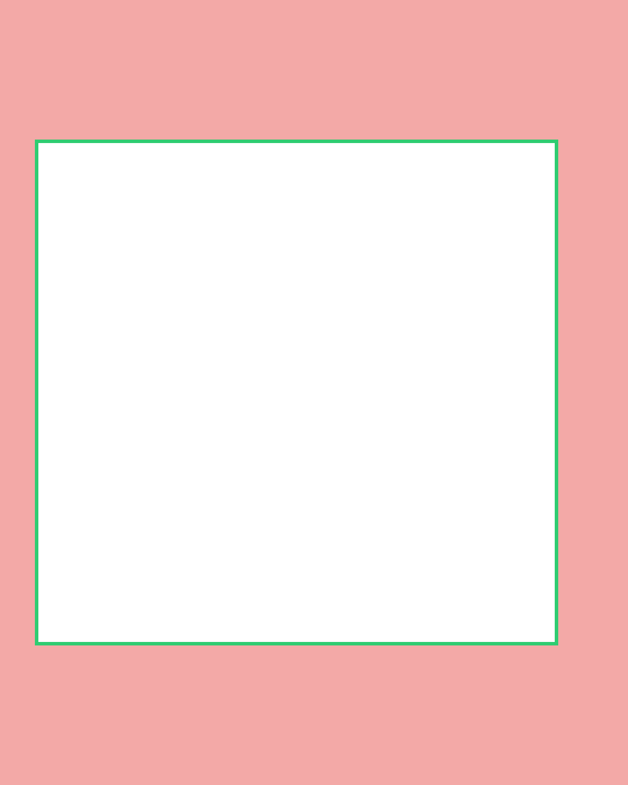

Meta 4:5 feed ads safe zone
On a 1080×1350 4:5 video, keep text, faces and logos inside a 900×870 px box: 240 px down from the top, 240 px up from the bottom, 60 px in from the left and 120 px in from the right. Everything outside it can end up under the sponsored label and profile row at the top, and the call-to-action bar and caption area at the bottom.
| Canvas | 1080 × 1350 px (4:5) |
|---|---|
| Safe area | 900 × 870 px |
| Top margin | 240 px |
| Bottom margin | 240 px |
| Left margin | 60 px |
| Right margin | 120 px |
| Visible share of frame | about 54% |
Free Meta 4:5 feed ads safe zone template
Transparent PNG, 1080×1350. Drop it on a track above your footage in CapCut, Premiere Pro, Final Cut, DaVinci Resolve or Canva, and turn it off before you export. Red is covered, the green box is safe.


Common questions
What is the Meta 4:5 feed ads safe zone?
It's the part of a 4:5 video that stays visible once Meta 4:5 feed ads draws its interface on top. On a 1080×1350 canvas, it's a 900×870 px box starting 60 px from the left and 240 px from the top.
How much of a Meta 4:5 feed ads video gets covered?
About 46% of the frame sits under the sponsored label and profile row at the top, and the call-to-action bar and caption area at the bottom. Roughly 54% stays clear.
Where should captions go on Meta 4:5 feed ads?
Keep burned-in captions above 1110 px from the top (at least 240 px off the bottom edge) and left of 960 px, so the right-hand buttons don't cover them.